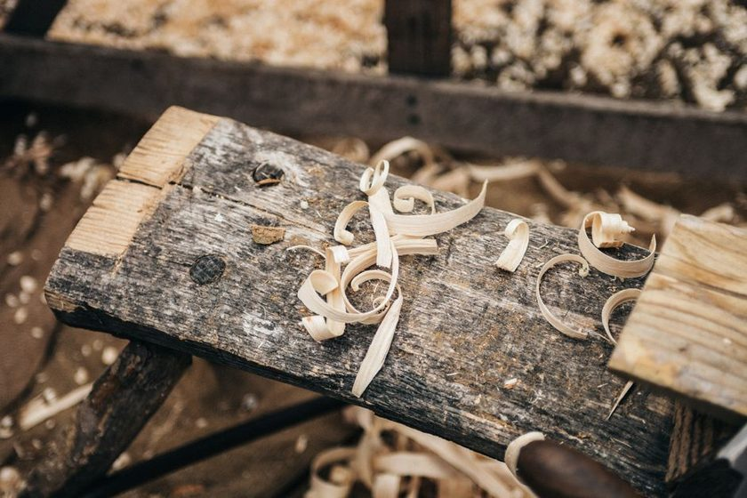

A carcase glued up flat in July can arrive at Christmas with a bow across one panel and a hairline split along a fixed rail, and the wood did nothing wrong. It kept doing what solid wood always does: it changed size as the air around it changed. Whether that shift showed up as nothing at all or as a repair job usually had less to do with the timber chosen than with whether the drawing had left that panel anywhere to go.
Wood Moves Across the Grain, Not Along It
A board is a bundle of long, straw-like fibers running the length of what used to be a tree trunk. Along that length, moisture has almost nowhere to act — a board that is a meter long today tends to still be very close to a meter long in a dry January. Across the grain is a different story. The cell walls there absorb and release moisture as humidity rises and falls, and a board's width and thickness can shift by an amount that, across a wide panel, is easy to see and easy to feel with a straightedge.
This is the detail that decides a lot of downstream choices. The same habit of marking a datum face before the first cut extends naturally to marking grain direction before a panel is joined into anything — because the direction of least movement and the direction of most movement are set the moment the board leaves the saw, not decided later at assembly.
Flatsawn and Quartersawn Make Different Bets
How a board was cut from the log changes how it behaves later, because it changes the angle at which the growth rings meet the face. Flatsawn stock, cut roughly tangent to the rings, tends to show the widest seasonal swing and the strongest pull toward cupping. Quartersawn stock, cut closer to perpendicular to the rings, tends to move a little less overall and distorts more evenly across the width, which is part of why it shows up so often in drawer sides and frame stock where flatness matters more than figure.
| Cut | Ring orientation | Seasonal movement | Distortion risk | Common use |
|---|---|---|---|---|
| Flatsawn | Roughly parallel to the face | Tends to be the widest across the face | More prone to cupping | Wide panels, figured tabletops |
| Quartersawn | Roughly perpendicular to the face | Narrower, more even swing | Cups less, moves uniformly | Drawer sides, frame stock |
| Riftsawn | Roughly 30–60° to the face | Similar stability to quartersawn | Minimal cupping | Legs, turned or square parts |
| Species variation | — | Some species move roughly twice as much as others | Worth checking before a wide glue-up | Any species-specific reference |
Why a Fixed Frame Fights a Moving Panel
A solid panel glued rigidly along all four edges inside a case has nowhere left to expand into. Through a humid stretch it pushes outward, and something has to give — a seam opens, or the case itself bulges slightly at the middle. Through a dry stretch the same panel shrinks, and if an edge is held fast by glue or screws, the pull can open a split right along a growth line, usually near whichever fastener refused to let the wood move.
Frame-and-panel construction sidesteps the problem by design rather than by hoping the wood behaves. The panel floats in a groove, pinned only loosely near its center, free to grow and shrink within the frame without touching either edge of it. The frame members themselves are narrow enough, and often cut with grain running the length of the piece, that their own movement stays close to negligible by comparison.
The panel was never trying to leave the case. It was only doing what solid wood has always done — the drawing just hadn't asked it to.
Marking Movement Allowance on the Drawing
None of this requires guessing at the bench if it's decided at the drawing table first. A panel note that only gives a fixed width leaves the builder no reason to think twice about how it's captured in the case. A panel note that also states the grain direction and a movement range gives the same builder a reason to leave a groove instead of a rabbet, or a slotted screw hole instead of a plain one.
- A grain-direction arrow, drawn along the length the board was actually cut, not assumed from the part's outline.
- The panel's finished width measured across the grain, since that's the dimension most likely to change.
- A movement allowance range noted beside the dimension, rather than folded silently into a single "safe" number.
- A note on which edge is fixed to the case and which edge is left to float inside a groove or slot.
- The rough season the stock was milled and glued, since a panel assembled in a humid month starts from a different baseline than one assembled in a dry one.
On the drawing, not at the bench
A panel drawn at a fixed width with no further note tends to get built at exactly that width, groove included. The same panel drawn with a marked movement allowance gets built with somewhere to go — and the note beside the dimension is the only difference between the two boards on the bench.
A Panel That Was Flat in July
A back panel, glued from three boards in a July shop, went into a case rabbeted and screwed on all four sides because nothing on the drawing said otherwise. By January, the heating had pulled the shop's humidity down for weeks, the panel had shrunk slightly across its width, and the fixed edges held their position while the wood in between had nowhere left to release into. The split ran cleanly along a glue line, right where the movement had been asking to go the whole time.
The same case, built the following year with a grain arrow marked on the panel and a groove instead of a rabbet, went through an identical winter without a mark on it. Nothing about the timber changed between the two builds. What changed was that the second drawing treated seasonal movement as a dimension to plan for, the same way it made the case for the drawing that saves more timber than technique: the habit of deciding on paper what the wood will be allowed to do, before the glue makes that decision permanent.